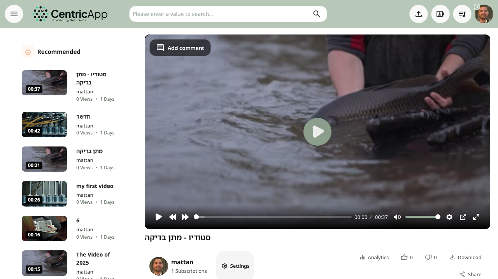

Overview
The watch page opens when you click a video from lists or go directly to /watch/video_id (e.g. https://dev.video/watch/1248). The page is divided into a main area (player, title, action menu, description, comments) and a sidebar (topics, recommendations).

Video player
At the top of the page is the player: play/pause, volume, progress bar, fullscreen. For videos with topics (chapters) – clicking a topic in the sidebar jumps to the matching time in the video.
Action bar below the player
Below the video title you will see:
- Avatar and channel – channel image, channel name, and subscriber count; click goes to the channel profile. For a signed-in user who is not the owner – Subscribe button (if enabled).
- Settings – for video owners or administrators: link to video settings (edit).
- Metrics – for administrators: link to video metrics (analytics).
- Summary – if a caption summary exists: download summary file.
- Download captions – for video owners when captions exist: download the captions file.
- Like / Dislike – like and dislike counts (for signed-in users).
- Download – if the video is set to allow download: download the video file.
- Share – opens share dialog (Facebook, WhatsApp, email, link, embed code).

Metrics (for owners/administrators)
If you are the video owner or an administrator – below the action bar you will see views, impressions, and view ratio, with a link to the full metrics screen.
Description and info
Below the actions: view count, publish date (e.g. "X ago"), and video description. Clicking "…more" / "show less" expands or collapses the description. If keywords (tags) are set – they appear below.

Video comments (Q&A)
If comments/questions are configured for the video (comments manager) – a video comments area appears with the list of questions and answers, sometimes with timestamps (click jumps to time in the video).
Replies (if enabled)
When replies are enabled in system settings and the video is not "link-only" private – a replies area appears below comments, with the option to add a reply (for signed-in users).
Sidebar – topics and recommendations
In the right column (on desktop; on mobile below the content):
- Topics summary – if topics (chapters) are set for the video: list of topics with start times; clicking a topic jumps the player to the matching time.
- Recommended – list of recommended videos to watch next. If you arrived from a video inside a playlist – the playlist name and its video list are shown.

Share
Clicking Share opens a dialog with: share to Facebook, WhatsApp, email, direct link to copy, and depending on settings – embed code (iframe) to embed the video on a site. The Copy button copies the link or embed code to the clipboard.